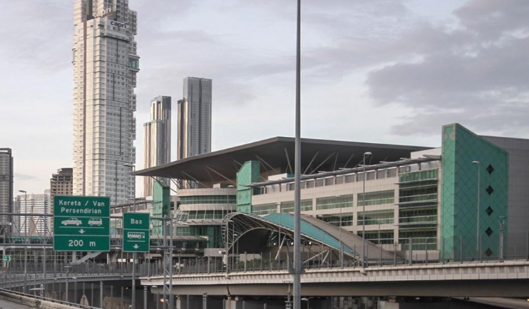
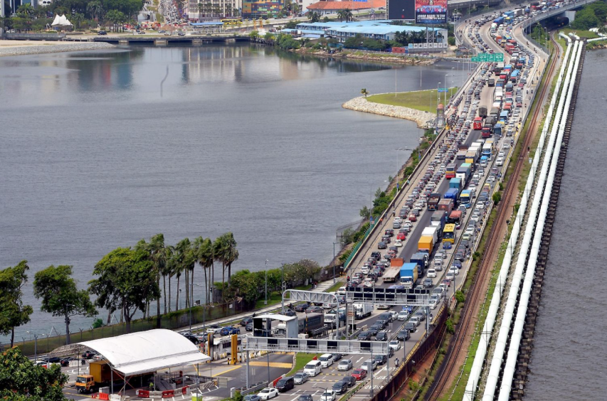
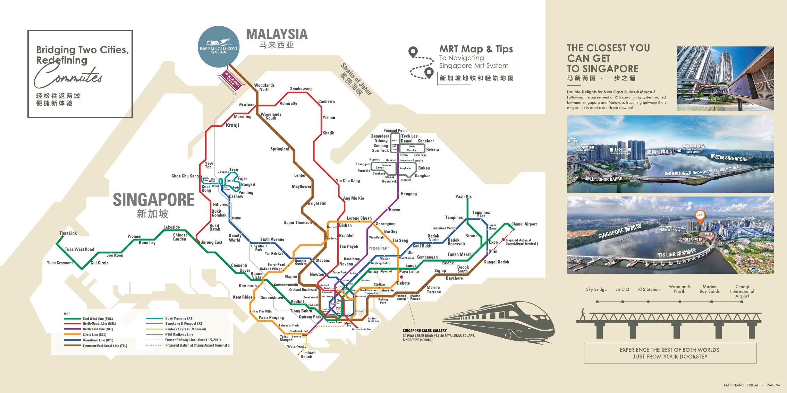
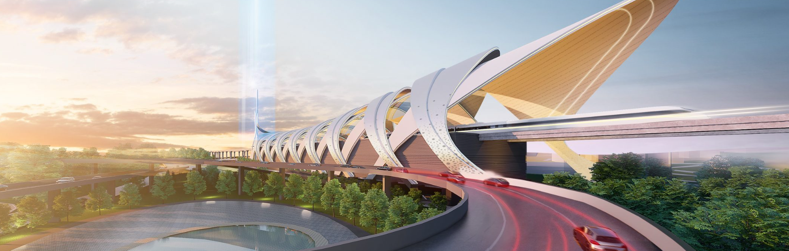
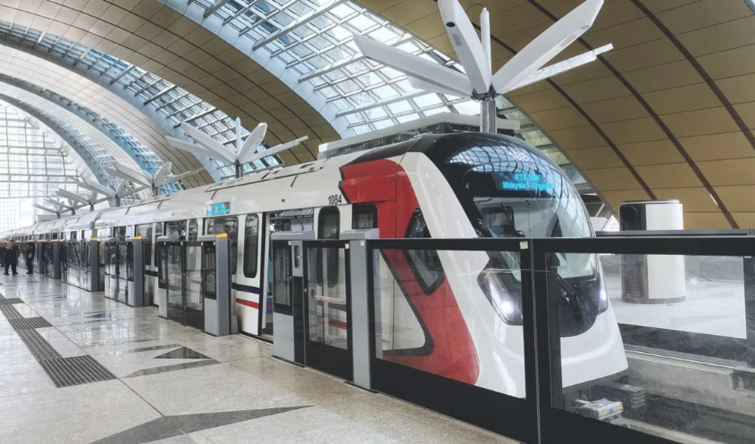
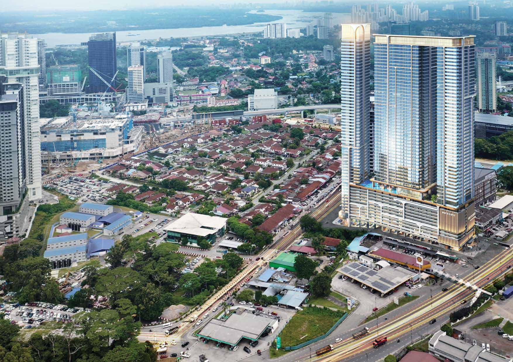

If you are looking for a condo in Johor Bahru city centre, you may often see two claims: walking distance to CIQ and walking distance to RTS. They sound similar, but they describe two different ways of travelling between JB and Singapore.
R&F Princess Cove is a typical Walk-to-CIQ example. SkyOne at Bukit Chagar is a useful Walk-to-RTS example.
This guide is not about saying one project is better. It explains what buyers are paying for, why new condos close to RTS often cost more, and when that higher price may or may not make sense.
What Does “Walk to CIQ” Mean?
For many Malaysians who work in Singapore, JB CIQ is already part of daily life. The journey normally looks like this:
This system is already operating. That is why condos within walking distance of CIQ already have a clear group of residents and tenants.
R&F Princess Cove: A Walk-to-CIQ Example
R&F Princess Cove is one of the best-known examples of a condo within walking distance of JB CIQ. Project materials describe an approximately 650-metre sheltered link towards the CIQ area.
For a Singapore commuter, this can be practical. Instead of driving to the checkpoint and finding parking, you can leave the development and walk towards immigration.
The main value is simple: you can live in Johor Bahru and walk to the existing Singapore crossing point. It is not only a future story. Buyers can inspect and use this route today.



What Does “Walk to RTS” Mean?
The Johor Bahru–Singapore RTS Link creates a different travel system. It connects Bukit Chagar in Johor Bahru with Woodlands North in Singapore.
The official target is to begin passenger service at the end of 2026. As at 30 September 2026, it is not yet open for normal passenger journeys. The train ride between the two stations is expected to take about five minutes.
Passengers are also expected to clear both Malaysia and Singapore immigration at the departure station. The future journey can look like this:
From Woodlands North, commuters can continue on Singapore's Thomson-East Coast Line. This is why RTS is more than another checkpoint. It creates a new cross-border rail commute.


Walk to CIQ vs Walk to RTS
| Comparison | Walk to CIQ | Walk to RTS |
|---|---|---|
| Transport system | Existing Causeway crossing | New cross-border railway |
| Typical example | R&F Princess Cove | SkyOne at Bukit Chagar |
| Main value | Walk to the current immigration and Causeway system | Walk to the Bukit Chagar rail station |
| Current status | Usable today | Passenger service targeted for the end of 2026 |
| Important check | Actual sheltered route and time to CIQ | Actual route, station entrance, crossings and shelter |
Both locations can be useful. But buyers should not treat every “near CIQ” and “near RTS” property as the same type of property.
Why Are Walk-to-RTS Condos Often More Expensive?
You may find an older condo near CIQ at a lower price, while a new project close to Bukit Chagar RTS has a much higher price per square foot. There are several reasons.
1. Land within a practical walk of RTS is limited
Many projects can say they are “near RTS”. But being a short drive away is not the same as walking to the station every morning.
If you still need to drive, find parking or arrange a ride, part of the convenience is lost. Land that allows a practical walk to the station entrance is limited, and that can create a location premium.
2. RTS changes the border-crossing routine
Today, many JB commuters depend on cars, buses and the Causeway. RTS adds a rail option. Some buyers may start asking, “How long does it take me to walk to the RTS station?” instead of only, “How close am I to the Causeway?”
This is similar to the difference between living near an MRT station and needing another car or bus journey before reaching it.
3. Buyers are also comparing new and older buildings
The price gap is not caused by RTS alone. A new project can also include newer facilities, different layouts, current construction costs and a developer's launch pricing. An older Walk-to-CIQ condo may have a lower entry price but a different building condition, maintenance record and unit supply.
So buyers should not assume the full price difference is payment for the station.
SkyOne: A Walk-to-RTS Example
SkyOne at Bukit Chagar is a useful example because the project is built around the new commuting idea. Its published project information states a distance of about 300 metres to Bukit Chagar RTS Station.
Its main location idea is: live near the RTS and walk to the station. The surrounding area also includes nearby shops and commercial facilities, including the SKS City Mall area.
For someone who expects to travel regularly between JB and Singapore after passenger service begins, this can create a different routine. The buyer is not only paying for a condo. Part of the price is for a short stated distance to a major cross-border rail station.
However, SkyOne also has trade-offs. It is a large, high-density serviced-apartment project with commercial strata. Buyers should compare the exact unit, lift access, monthly charges, building density and real walking route, not only the “300m to RTS” headline.

R&F Princess Cove and SkyOne Serve Different Needs
R&F Princess Cove and SkyOne should not be compared only by price per square foot.
R&F Princess Cove represents the Walk-to-CIQ concept. Its main walking advantage already exists today.
SkyOne represents the Walk-to-RTS concept. Its location is designed around the Bukit Chagar rail connection.
One is based on the existing border-crossing system. The other is based on a new railway. That does not automatically make one better. The right choice depends on how you plan to travel, your budget, when you need to move in and which building you are comfortable owning.
Should You Pay More to Live Near RTS?
A property being close to RTS does not mean any price is reasonable. Before paying a premium, check:
- How far is the actual walk to the station entrance?
- Is the route comfortable, safe and sheltered?
- Are there road crossings or construction areas along the way?
- Are shops, food and daily services operating nearby?
- Who is likely to rent this unit?
- How many similar units may compete for tenants?
- What are the total purchase price, monthly costs and holding costs?
RTS can be an important advantage. But location is only one part of a property decision.
Which Location Should You Choose?
Start with one question: How do you plan to travel to Singapore?
If you already use the existing CIQ and Causeway regularly, a Walk-to-CIQ condo such as R&F Princess Cove can be practical.
If you are buying mainly for the RTS commuting lifestyle, then the real walking distance to Bukit Chagar station matters more.
Do not stop at an advertisement that says “near RTS”. Open the map, check the station entrance, walk the route and then compare the price. For a cross-border commuter, there is a real difference between “near RTS” and “I can walk downstairs and continue to RTS.”
You can also read my guide to which JB properties may benefit from the RTS Link for a wider look at the station catchment and buyer risks.
Frequently Asked Questions
What is the difference between walking to JB CIQ and walking to Bukit Chagar RTS?
Walking to JB CIQ gives you access to the existing Causeway crossing system. Walking to Bukit Chagar RTS means living near the new cross-border railway station for travel to Woodlands North when passenger service begins.
Why are new condos within walking distance of RTS often more expensive?
The price can reflect limited land close enough for a practical walk, a new rail commute and the cost of a new development. The premium is not automatically fair. Compare the route, total price, monthly costs and competing supply.
Is R&F Princess Cove or SkyOne better for Singapore commuters?
Neither is better for everyone. R&F Princess Cove offers an established walk towards the current CIQ system. SkyOne is positioned around walking to Bukit Chagar RTS. Your routine, budget and preferred building matter more than the headline alone.
Transport status checked on 30 September 2026. Project distances are based on published project information and should be verified through an actual walk before purchase. Prices, routes, access points and surrounding businesses can change.